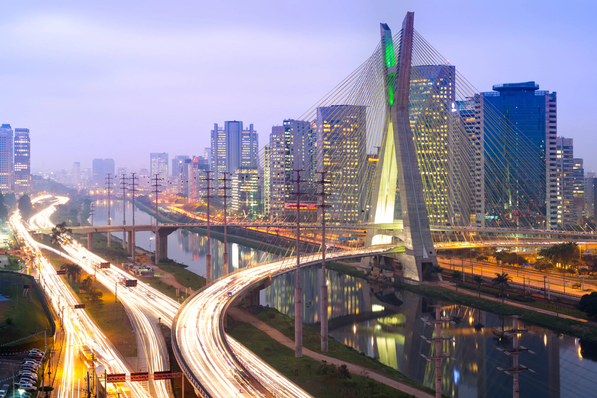
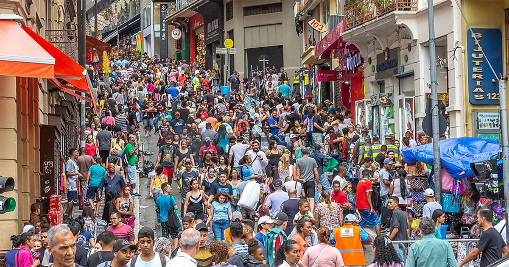

O estado de São Paulo é, por larga margem, o protagonista econômico do Brasil. Com um Produto Interno Bruto (PIB) acima de R$ 3 trilhões — cerca de 31% do total nacional —, sua economia diversificada lidera o país nos setores industrial, tecnológico, financeiro e agrícola. Destaca-se também como o maior produtor mundial de suco de laranja, açúcar e etanol. A cidade de São Paulo, epicentro financeiro da América Latina, concentra a maior quantidade de agências bancárias, operações de crédito e abriga a B3 — uma das bolsas de valores mais importantes do mundo.

Com cerca de 46 milhões de habitantes em 2024, São Paulo é o estado mais populoso do país, representando quase 22% da população brasileira. Está praticamente totalmente urbanizado — cerca de 97% da população vive em áreas urbanas — e a população rural está envelhecendo mais rapidamente. A densidade demográfica é alta, cerca de 179 habitantes por km², a terceira maior do Brasil.

Além da capital, destacam-se outras cidades com mais de 1 milhão de habitantes: Guarulhos (~1,29 milhão) e Campinas (~1,14 milhão). Outras cidades importantes incluem São Bernardo do Campo, Santo André, Osasco, Sorocaba, Ribeirão Preto, São José dos Campos e São José do Rio Preto. Santos, no litoral, é um centro econômico significativo por abrigar o maior porto da América Latina.
Desde 1º de janeiro de 2023, o governador de São Paulo é Tarcísio Gomes de Freitas (Republicanos), o 64.º no cargo. Ex-ministro da Infraestrutura do governo Jair Bolsonaro, é engenheiro e militar da reserva. Sua gestão prioriza infraestrutura, parcerias público-privadas e retomada de obras, com destaque para iniciativas como o PPI-SP, que prevê cerca de R$ 470 bilhões em investimentos. Declarou seu foco na reeleição em São Paulo, afirmando em 2024 que seu caminho é continuar governando o estado, e reforçou recentemente que não será candidato à presidência em 2026.